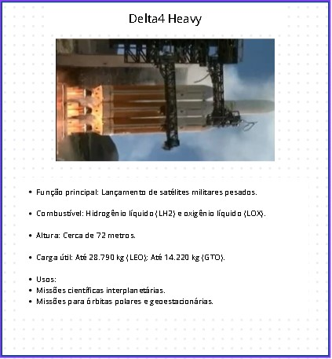

Legado da Família Delta
A família Delta desempenhou um papel crucial na história da exploração espacial, com mais de 300 lançamentos ao longo de 60 anos. Desde satélites científicos e missões tripuladas até sondas interplanetárias, a série foi um pilar da capacidade espacial dos EUA. O encerramento do programa Delta marca o fim de uma era, mas seu impacto continua a influenciar o desenvolvimento de novos lançadores.
Voltar